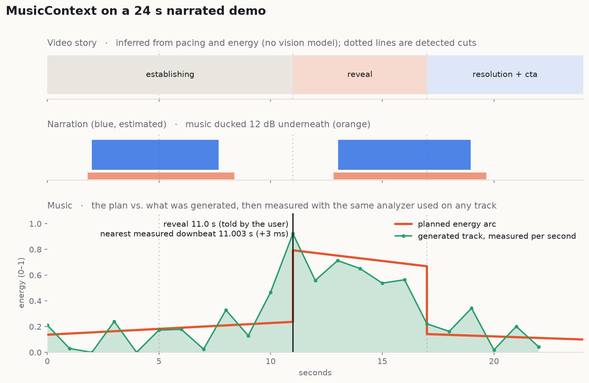

Give your agent
a music director.
AI agents generate remarkable video, then pick a generic loop at the wrong tempo that peaks nowhere near the reveal. MusicContext works out what a video is and what music it needs, then finds or generates that music and mixes it in. It also tells you which of those conclusions it measured and which it guessed.
pipx install "musiccontext[agent] @ git+https://github.com/AAGAM17/MusicContext" && musiccontext init-agent
Music for an edit is about timing, not tags.
Ask for "cinematic music" and an agent picks something that sounds cinematic. That's a tagging decision. What actually makes an edit work is timing, and these are the timing decisions MusicContext makes:
Land the hit
The product appears. The music should land its biggest hit there, not 900 ms later.
Respect the voice
The narrator speaks for half the timeline. A dense lead melody will fight every word.
Ride the cuts
Cuts every 2 s. At 120 BPM each cut falls on a beat. At 103 BPM none of them do.
Resolve the ending
The video ends at 24 s, so the music has to resolve there instead of getting cut off mid-phrase.
Six stages, from pixels to a mix.
The core engine doesn't know about any particular model, vendor or catalogue. Providers plug in behind interfaces, and every stage writes to a portable .musicctx artifact.
Analyze
Scenes, cuts, motion, colour, speech, silence, energy.
Story
Scene roles, the reveal, CTA and key moments on one timeline.
Direct
Style, mood, tempo, arc, instrumentation, ducking.
Source
Your library, search providers, or offline generation.
Select
Nine-dimension scoring, with exclusions explained.
Sync
Align, loop, fade, duck, and render with FFmpeg, then re-probe.
A plan for a 24 s product demo
A plan you can read and check.
Every key moment is tagged with where it came from, and the tags carry through to the JSON. That way an agent can pass the difference on to the user instead of sounding equally sure about everything.
Music direction (confidence 0.60) minimal · confident, premium, curious · instrumental tempo 91 BPM (80-102) energy 0.28 rhythm sparse · texture dry/spacious instruments piano, soft_pads, subtle_percussion avoid vocals, lead_vocal, busy_lead_melody, distorted_guitar Arc 0.0-11.0 build 0.14 rising layers and rhythmic density leading to the payoff 11.0-17.0 peak 0.74 full arrangement; the main hit lands exactly on the payoff 17.0-24.0 resolution 0.14 ease off into a clear resolution / call to action peak 11.0s · ending: resolve ducking -12 dB under speech (bed -3 dB) Key moments 2.0s voiceover_start duck [estimated] Speech begins; music should make space 11.0s reveal peak [user] Supplied by the user/agent: reveal at 11.00s 17.0s cta resolve [inferred] Closing section after the peak; possible call to action 17.0s hard_cut none [detected] Hard cut (scene score 0.86) 24.0s ending resolve [detected] End of video

One line, and every agent picks it up.
init-agent installs the Skill into every coding agent it finds on your machine. It never overwrites anything without --force, supports --dry-run, and prints exactly what it changed.
Install the CLI and the Skill
pipx install "musiccontext[agent] @ git+https://github.com/AAGAM17/MusicContext" \ && musiccontext init-agent
Optional: wire the MCP server too, or target one agent
musiccontext init-agent --mcp # also add the MCP server musiccontext init-agent --agent cursor # just one agent musiccontext init-agent --all # include agents not detected yet musiccontext init-agent --dry-run # show what would change
Verify
musiccontext doctor # FFmpeg, storage, providers, agent integrations
Restart your agent, then type /musiccontext or just ask for music. The agent picks the Skill up on its own.
Install the Skill and add the MCP server to ./.mcp.json
musiccontext init-agent --mcpOr use the plugin marketplace
/plugin marketplace add AAGAM17/MusicContext /plugin install musiccontext@musiccontext
Use it
/musiccontext Analyze demo.mp4 and tell me what soundtrack it needs.
Plain requests work too, like "make this video feel cinematic", "find music that works under the narration" or "make the music peak at the product reveal".
Add the MCP server (supported route)
codex mcp add musiccontext -- musiccontext mcpInstall the Skill
musiccontext init-agent --codex.codex-plugin/plugin.json manifest ships with the repo, but Skill discovery couldn't be tested against the Codex CLI used during development. Use the MCP route for now. Details are in docs/agents/codex.md.Pick the agent
musiccontext init-agent --agent cursor musiccontext init-agent --agent copilot # VS Code Copilot musiccontext init-agent --agent gemini # Gemini CLI
Add --mcp to register the MCP server as well
musiccontext init-agent --agent cursor --mcpRun musiccontext init-agent --help to see the exact agent names your version supports.
Already have the CLI? Any Agent Skills installer works against this repo:
npx skills add AAGAM17/MusicContextgit clone https://github.com/AAGAM17/MusicContext && cd MusicContext make install && make fixtures && make test
Test media is synthesized by scripts/make_fixtures.py. It's deterministic, and there are no binary assets in the repo.
From demo.mp4 to a scored cut.
The core loop
musiccontext doctor musiccontext analyze demo.mp4 # scenes, speech, energy, story musiccontext plan demo.mp4 # direction → .musicctx musiccontext recommend demo.mp4 # scored, explained musiccontext sync --video demo.mp4 \ --music track.mp3 --output final.mp4
Tell it what you know
musiccontext plan demo.mp4 \ --marker 18.2=reveal \ --platform product-demo \ --style cinematic --mood premium \ --vocals none --commercial-use
Inference is a heuristic. A marker you supply is a fact.
No music yet? Fully offline
musiccontext library scan ~/Music # index your files musiccontext generate demo.mp4 --seed 7
Python SDK
from musiccontext import MusicContext ctx = MusicContext() plan = ctx.create_music_plan(ctx.analyze("demo.mp4")) print(plan.music_direction.brief) ctx.sync(video="demo.mp4", music="track.mp3", output="final.mp4")
One engine, four ways in.
The CLI, the MCP server, the Python SDK and the Agent Skill all share the same schemas and providers. Add --json to any command for bounded, machine-readable output.
inspectContainer metadata only, no analysis.
analyzeScenes, cuts, motion, speech, energy curve, story model.
planThe Music Direction Plan. Writes a .musicctx artifact.
recommendScores real candidates on nine dimensions, with reasons.
searchQueries providers and your library.
generateSynthesizes a track that follows the plan.
syncTrim, loop, fade, duck, align, then render.
renderPlan, pick or generate, and sync in one step.
exportPrints a stored artifact (summary or --full).
libraryadd, scan, search, list, remove, stats.
providersWhat's available, what each one needs, and what leaves your machine.
doctorDiagnoses the install.
configshow (secrets redacted), set, path.
profileBrand and creative profiles that bias the direction.
init-agentInstalls the Skill (and optionally MCP) into every agent.
mcpRuns the MCP server (JSON-RPC 2.0 over stdio).
MCP server · 10 tools
Stricter than the CLI: strict input schemas, a filesystem sandbox (MUSICCONTEXT_ROOTS), size-bounded output and sanitized media text.
inspectanalyzeplanrecommendsearchlibrary_searchgeneratesyncprovidersget_artifact
Providers · plug in, don't fork
There are three kinds: library, search and generation. Each one reports whether it's available, which env var it needs, and whether it would send media off your machine. The local library and offline procedural generation ship today. Third parties register through the musiccontext.providers entry point.
What it knows vs. what it guesses.
Every temporal value carries a source, a confidence and a provenance. When MusicContext doesn't know something, it says "unknown" and gives the reason rather than making up a number.
| Value | Basis | Honest limits |
|---|---|---|
| Duration, resolution, fps | detected | From the container. |
| Cuts / scene boundaries | detected | FFmpeg scene scores. Soft dissolves are approximate. |
| Motion, brightness, colour | estimated | 64×36 frame differencing, with cut spikes removed. |
| Speech intervals | detected / estimated | Detected when you give it a transcript or subtitles. Otherwise a heuristic VAD estimates it, capped at 0.6 confidence. |
| Scene roles, reveal, CTA | inferred | Based on pacing and energy only. There's no vision model and no OCR, so use --marker for moments that matter. |
| Tempo, beats, downbeats, key | estimated | Classical DSP. Half/double-time ambiguity is reported, not hidden. Downbeats assume 4/4. |
| Loudness (LUFS) | detected | EBU R128 via FFmpeg. |
| Vocals present | tags / sidecar | Never guessed from the audio. |
| License status | verified | Only from a .license.json sidecar or a provider API. A copyright tag in a file counts as an unverified claim. |
Media is untrusted data.
No telemetry, ever
Local-first. Providers that would send media off your machine are flagged, and --local-only turns them off.
Sanitized inputs
Tags, subtitles, transcripts and provider responses are bounded and never executed. Text that looks like an injection attempt raises a warning.
No shell
FFmpeg is always invoked with argument lists. Paths are sandboxed, and traversal, NUL bytes and escaping symlinks are rejected.
Remote off by default
When remote URLs are enabled: HTTPS only, DNS pinned, private addresses refused, and every redirect re-validated.
Secrets redacted
Keys come only from MUSICCONTEXT_<PROVIDER>_API_KEY. They're never written, logged or printed.
Tests that bite
Remove any defence and a test fails. Run them with make test-security.
Go deeper.
Architecture
The pipeline and the data model.
↗Agents
Claude Code, Codex status and MCP.
↗Providers
Using providers and writing your own.
↗Workflows
Worked end-to-end scenarios.
↗The Skill
The Agent Skill itself, with its references.
↗Roadmap
What's next, plus the changelog.
Boundaries. MusicContext isn't a video editor, a DAW, a music model, or a replacement for a composer. Its job is to decide what music a video needs and to place it correctly.